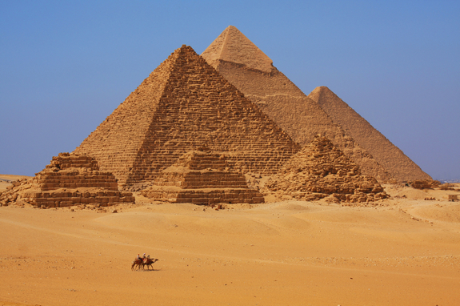
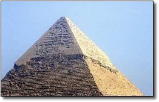

Pyramids weren't originally yellow

The great Pyramids located in Egypt have always been envisioned as these yellow, crumbling objects, but back in the day, these pyramids looked much nicer.

They were originally colored white, as the outer layer of the pyramids were coated with limestone bricks to give it this smooth shiny finish.
What we asee today, is actually just the structural base of the pyramid. Due to the wear and tear of the desert, the pyramids lost the outer layers although evidence of this can still be seen today.
